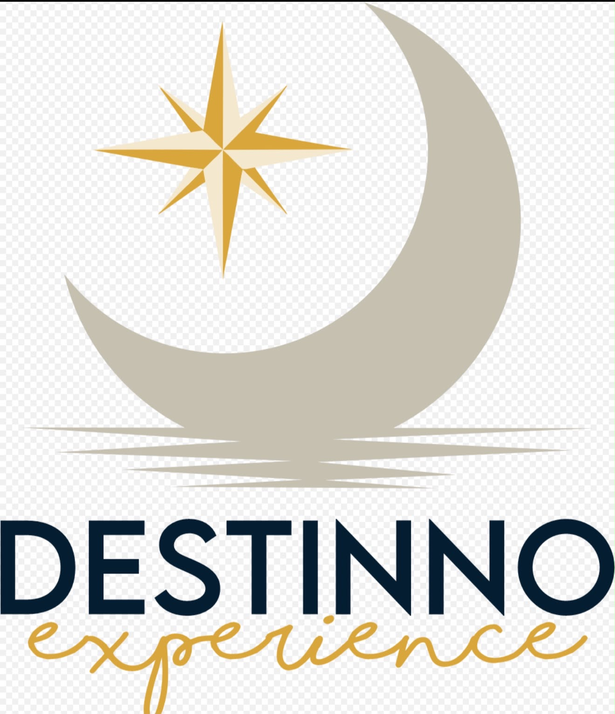

Nossos Roteiros
Explore as opções cuidadosamente selecionadas para a sua próxima grande aventura.
Rio Teles Pires
Mato Grosso / ParáUm dos destinos mais piscosos do planeta e verdadeiro berço dos Gigantes da Amazônia. Pescaria de alto nível.
Ver este roteiroRio Cuiabá
Mato GrossoBreve descrição sobre o local, o que esperar da pescaria e a experiência exclusiva proporcionada neste roteiro.
Ver este roteiroRio Roosevelt
AmazonasBreve descrição sobre o local, o que esperar da pescaria e a experiência exclusiva proporcionada neste roteiro.
Ver este roteiroBaixo Rio Branco
RoraimaBreve descrição sobre o local, o que esperar da pescaria e a experiência exclusiva proporcionada neste roteiro.
Ver este roteiroRio Anauá
RoraimaBreve descrição sobre o local, o que esperar da pescaria e a experiência exclusiva proporcionada neste roteiro.
Ver este roteiroRio Xingu
ParáBreve descrição sobre o local, o que esperar da pescaria e a experiência exclusiva proporcionada neste roteiro.
Ver este roteiroRio Sucunduri
AmazonasBreve descrição sobre o local, o que esperar da pescaria e a experiência exclusiva proporcionada neste roteiro.
Ver este roteiroRio Acari
AmazonasExpedição multiespécies na Amazônia preservada. Pinima Amazon Fishing Lodge com estrutura premium.
Ver este roteiroBaixo Araguaia
Mato GrossoBreve descrição sobre o local, o que esperar da pescaria e a experiência exclusiva proporcionada neste roteiro.
Ver este roteiro
Quem Somos
A DESTINNO Experience nasceu para transformar o planejamento da sua pescaria em uma expedição impecável. Nosso foco é conectar pescadores exigentes aos locais mais exclusivos da natureza, eliminando qualquer imprevisto.
Acreditamos que a pesca de alto padrão exige três pilares:
- Destinos selecionados com rigor
- Logística completa e sem preocupações
- Experiências que vão além da pescaria
Com a DESTINNO, a sua única preocupação é pescar. Nós cuidamos de todo o resto.
Mais informações🛡️ Seguro Viagem!
Viaje com mais tranquilidade. A DESTINNO EXPERIENCE oferece o melhor caminho para a sua segurança e da sua família.
Saiba mais"O rio não é apenas um destino, é onde a nossa alma encontra a verdadeira calma e a emoção do desconhecido."
O que nossos clientes comentam
Mauricio da Silva
"Já fiz outras viagens de pesca, mas dessa vez me surpreendi com o cuidado em cada detalhe. Com certeza faremos outra."
Carla Beth
"A curadoria fez toda a diferença. Economizamos tempo e encontramos uma experiência exatamente como imaginávamos."
Vinicius Martelo
"Viajei com tranquilidade porque todas as etapas estavam bem organizadas e as informações foram passadas com clareza."
Mauricio da Silva
"Já fiz outras viagens de pesca, mas dessa vez me surpreendi com o cuidado em cada detalhe. Com certeza faremos outra."
Loja Virtual
Em breve!
Fique atento! Estamos preparando mais experiências incríveis e exclusivas para vocês.
Quero ser avisado!